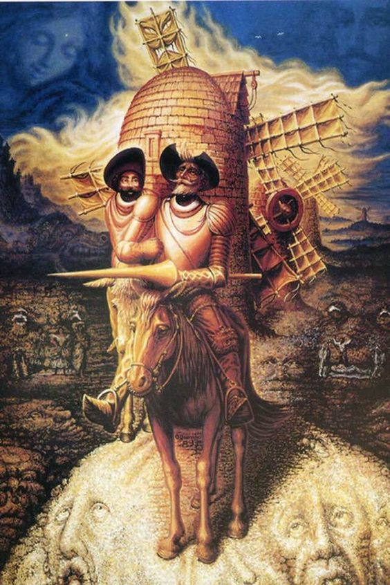
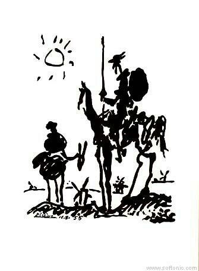

El ingenioso hidalgo Don Quijote de la Mancha es una novel escrita por Miguel Cervantes, la cuál consiste de dos partes publicadas en 1605 y 1615 respectivamente. La historia sigue las aventuras del personaje principal, Don Quijote, quién cree que es un caballero andante luego de volverse loco leyendo novelas de caballería. Junto a su escudero Sancho Panza, él y Don Quijote buscan aventuras dentro de su propia locura, encontrandose distintas situaciones. Dentro de la novela el lector se puede encontrar con varias historias y temas aún relevantes en el presente. Esta novela es una parodia de las novelas de caballería, y se considera la novela de las novelas en español, influenciado a muchas historias y autores en el futuro por sus muchos elementos ingeniosos y modernos para su tiempo.